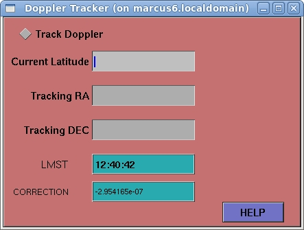

The IRA Starter window is used to set parameters for the Gnu Radio receiver subsystem, then start the main IRA application.

Determines whether the IRA system will track the receiver frequency, based on the given coordinate and geocentric location parameters.
This control sets the current latitude of the observatory, in decimal format. For example, a site in Canada might set this to “44.85”
The Right Ascension of the object to be tracked, in decimal format.
The Declination of the object ot be tracked, in decimal format.
Shows the current Local Mean Sidereal Time
Shows the calculated frequency correction, based on the given object and location parameters
This document is displayed in the Firefox browser, when you press this button.